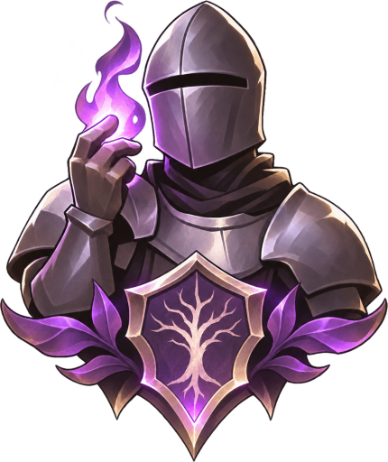

Cursedon
Un RPG de fantasía oscura en primera y tercera persona, para jugar solo o en cooperativo online.
El juego
Explorá la Costa Rompiente y la Arboleda del Velo, cumplí misiones, enfrentá jefes y forjá tu equipo. Podés jugar con amigos en línea, sumarte a un clan y comerciar en el mercado.
El Pase del Velo agrega recompensas de temporada, todas cosméticas: nada de lo que se compra da ventaja en combate.
Tu cuenta y tus datos
Cursedon usa tu cuenta de Google Play Juegos para iniciar sesión, guardar una copia de tu partida y sumar tus logros. El detalle de qué datos usa el juego y cómo pedir que los borremos está en la política de privacidad.
Contacto
Escribinos a valendiaz2005@gmail.com o entrá a nuestro Discord.
The game
Cursedon is a dark fantasy RPG in first and third person, played solo or in online co-op. Explore the Breakwater Coast and the Veil Grove, complete quests, face bosses and forge your gear. Play with friends online, join a clan and trade on the market.
The Veil Pass adds seasonal rewards that are all cosmetic: nothing you buy gives an advantage in combat.
Your account and your data
Cursedon uses your Google Play Games account to sign you in, keep a backup of your save and record your achievements. See the privacy policy for what data the game uses and how to ask us to delete it.
Contact
Write to valendiaz2005@gmail.com or join our Discord.